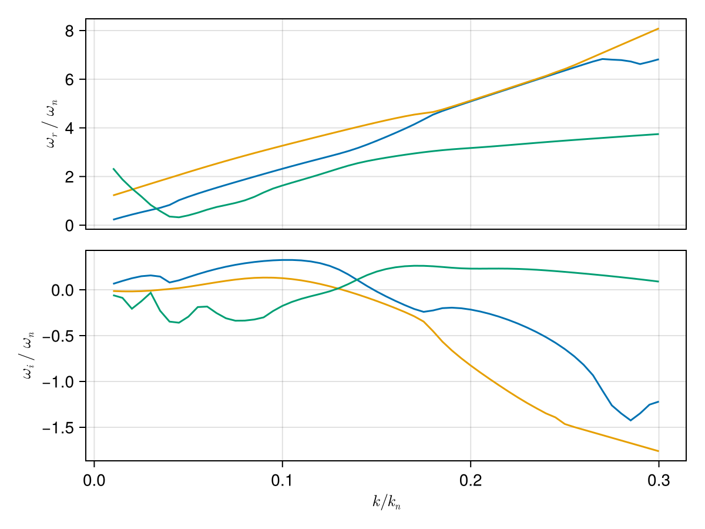

Case: Ring beam instability
This page demonstrates how to use the package to solve kinetic dispersion relations for the ring beam instability Umeda et al. [5].
Simulation Parameters
- Background Magnetic Field: $B_0 = 96.24$ nT
- Species:
- Ring Beam Electrons ($10\%$)
- Density: $n_r = 0.1 n_0$
- Temperature: $T_r = 51$ eV
- Drift Velocity: $v_{d,z} = 0.1 c$, $v_{d,\perp} = 0.05 c$
- Background Electrons ($90\%$)
- Density: $n_b = 0.9 n_0$
- Temperature: $T_b = 51$ eV
- Drift Velocity: $v_{d} = 0$
- Ring Beam Electrons ($10\%$)
using PlasmaBO
using PlasmaBO: q, me
using Unitful
# Umeda 2012 ring beam configuration
B0 = 96.24e-9 # [Tesla]
T = 51u"eV"
# Ring beam electrons (10% density)
# The first argument (optional) indicates particle type of the distribution (by default we use `proton`)
ring_beam = Maxwellian(:e, 1e5, T; vdz=0.1, vdr=0.05)
# Background electrons (90% density)
background = Maxwellian(:e, 9e5, T)
species = [ring_beam, background]
# Compute normalization
wce = abs(B0 * q / me)
lambdaD = Debye_length(species)
kn = 1 / lambdaD
# Wave vector: k*λD = 0.03, θ = 40°
k = 0.03 / lambdaD
θ = deg2rad(40)
kx = k * sin(θ)
kz = k * cos(θ)
# J=12 provides good accuracy (J-pole approximation order)
ωs = solve(species, B0, kx, kz; N=6, J=12)
# Filter for unstable modes (ω/ωce) with positive growth rate
ω_unstable = filter(ω -> isfinite(ω) && imag(ω) > 0.001*wce, ωs)[1] ./wce0.6229290800314587 + 0.1568774919354027imDispersion Curve Scan
Scan k*λD from 0.01 to 0.3
julia> k_ranges = (0.01:0.005:0.3) .* kn;julia> sol = solve(species, B0, k_ranges, θ; N=6)Solving dispersion (k, θ)... 3%|▊ | ETA: 0:00:30 Solving dispersion (k, θ)... 20%|████▋ | ETA: 0:00:15 Solving dispersion (k, θ)... 29%|██████▋ | ETA: 0:00:12 Solving dispersion (k, θ)... 36%|████████▏ | ETA: 0:00:11 Solving dispersion (k, θ)... 42%|█████████▊ | ETA: 0:00:10 Solving dispersion (k, θ)... 49%|███████████▎ | ETA: 0:00:08 Solving dispersion (k, θ)... 56%|████████████▉ | ETA: 0:00:07 Solving dispersion (k, θ)... 63%|██████████████▍ | ETA: 0:00:06 Solving dispersion (k, θ)... 69%|████████████████ | ETA: 0:00:05 Solving dispersion (k, θ)... 76%|█████████████████▌ | ETA: 0:00:04 Solving dispersion (k, θ)... 83%|███████████████████▏ | ETA: 0:00:03 Solving dispersion (k, θ)... 93%|█████████████████████▌ | ETA: 0:00:01 Solving dispersion (k, θ)... 100%|███████████████████████| Time: 0:00:15 PlasmaBO.DispersionSolution{StepRangeLen{Float64, Base.TwicePrecision{Float64}, Base.TwicePrecision{Float64}, Int64}, Float64, Matrix{Vector{ComplexF64}}}(0.00018836306291400675:9.418153145700338e-5:0.005650891887420202, 0.6981317007977318, Vector{ComplexF64}[[-102928.90548158203 - 993.7228680306672im, -102928.90548158184 - 993.7228680306766im, -102928.90548158169 - 993.7228680306947im, -102456.80666101434 - 1093.7583777184245im, -102456.80666101396 - 1093.7583777184302im, -102456.80666101389 - 1093.7583777184336im, -102074.22773811074 - 1156.3266317857347im, -102074.22773811067 - 1156.326631785715im, -102074.22773811001 - 1156.3266317856521im, -101728.72370944846 - 1186.7577946923072im … 106054.5633220246 - 1186.757794692487im, 106400.06735068708 - 1156.3266317857126im, 106400.06735068717 - 1156.3266317857372im, 106400.06735068762 - 1156.3266317857172im, 106782.64627359099 - 1093.7583777184002im, 106782.64627359119 - 1093.7583777184586im, 106782.6462735916 - 1093.7583777184im, 107254.74509415812 - 993.7228680306732im, 107254.74509415825 - 993.7228680306871im, 107254.74509415828 - 993.7228680306762im]; [-104132.2487134752 - 4.513331436340201e-7im, -103612.70687135877 - 1490.5843020460325im, -103612.70687135831 - 1490.5843020459763im, -103612.70687135804 - 1490.5843020460215im, -102904.55864050775 - 1640.6375665776598im, -102904.5586405072 - 1640.6375665776368im, -102904.5586405067 - 1640.6375665776316im, -102330.69025615277 - 1734.4899476786143im, -102330.69025615182 - 1734.4899476785683im, -102330.69025615146 - 1734.4899476785738im … 108301.19363202347 - 1780.136692030242im, 108819.4496750135 - 1734.4899476801802im, 108819.44967501695 - 1734.4899476785793im, 108819.4496750181 - 1734.489947678541im, 109393.31805937283 - 1640.6375665776425im, 109393.31805937306 - 1640.6375665776422im, 109393.31805937308 - 1640.6375665779676im, 110101.46629022308 - 1490.5843020460022im, 110101.46629022363 - 1490.5843020459981im, 110101.46629022431 - 1490.5843020460777im]; … ; [-1.6668220831543833e6 - 9.953873814083636e-8im, -1.6668073243794113e6 - 9.606128514860757e-8im, -141905.58707923803 - 29314.820180624287im, -141905.58469886438 - 29314.824606905066im, -141905.5846988507 - 29314.824606926504im, -127978.72728981146 - 32265.960691412005im, -127978.66949212358 - 32265.872142693475im, -127978.66949188733 - 32265.872142228596im, -124978.765710947 - 29314.701388747606im, -124978.70091519273 - 29314.82460690483im … 252590.96948620366 - 29314.824606904935im, 252611.62182677438 - 29293.731591931028im, 255590.9376240921 - 32265.86874015737im, 255590.93806313523 - 32265.87214269341im, 255608.17626417556 - 32353.934320423894im, 269517.85314109863 - 29314.824731368728im, 269517.85326987866 - 29314.824606905342im, 269521.12786913005 - 29311.453201444154im, 1.6668074216658394e6 - 1.0553003104490574e-7im, 1.6668222495912674e6 - 1.1176507541676983e-7im]; [-1.6950407498886846e6 - 9.759241947904229e-8im, -1.695026489885852e6 - 9.429368219571188e-8im, -142589.38889039922 - 29811.680860947865im, -142589.38608864107 - 29811.686040920256im, -142589.38608862273 - 29811.68604094592im, -128426.4888058939 - 32812.85515154843im, -128426.42147161812 - 32812.75133155262im, -128426.42147133248 - 32812.75133098836im, -125662.57610517845 - 29811.546678396633im, -125662.50230496931 - 29811.68604092021im … 255437.69068226765 - 29811.686040919983im, 255460.2560818174 - 29788.66899034809im, 258201.6093437765 - 32812.747288006016im, 258201.6098489186 - 32812.75133155277im, 258220.94092715665 - 32912.85193048592im, 272364.5743125179 - 29811.686188423286im, 272364.57446594036 - 29811.6860409202im, 272368.3149263014 - 29807.8598921652im, 1.6950265946531347e6 - 1.0469357162277981e-7im, 1.6950409216652345e6 - 1.1141855793539435e-7im];;])
# k, ω pairs for initial branch points (see `BranchPoint` for more control over tracking)
initial_points = [
(0.1 * kn, 0.3im * wce),
(0.1 * kn, 0.1im * wce),
(0.2 * kn, 0.25im * wce)
]
branches = track.(sol, initial_points)
# Extract individual branches
for (i, (k_branch, ω_branch)) in enumerate(branches)
println("Branch $i:")
println(" k range: $(minimum(k_branch)) to $(maximum(k_branch))")
println(" Max growth rate: γ = $(maximum(imag.(ω_branch)))")
endBranch 1:
k range: 0.00018836306291400675 to 0.005650891887420202
Max growth rate: γ = 5508.503362136964
Branch 2:
k range: 0.00018836306291400675 to 0.005650891887420202
Max growth rate: γ = 2253.5376227170386
Branch 3:
k range: 0.00018836306291400675 to 0.005650891887420202
Max growth rate: γ = 4434.58787726553Plot all branches
using CairoMakie
plot_branches(branches, kn, wce)